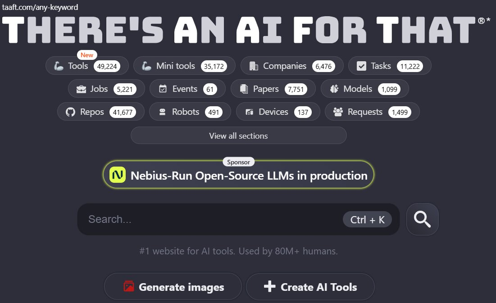
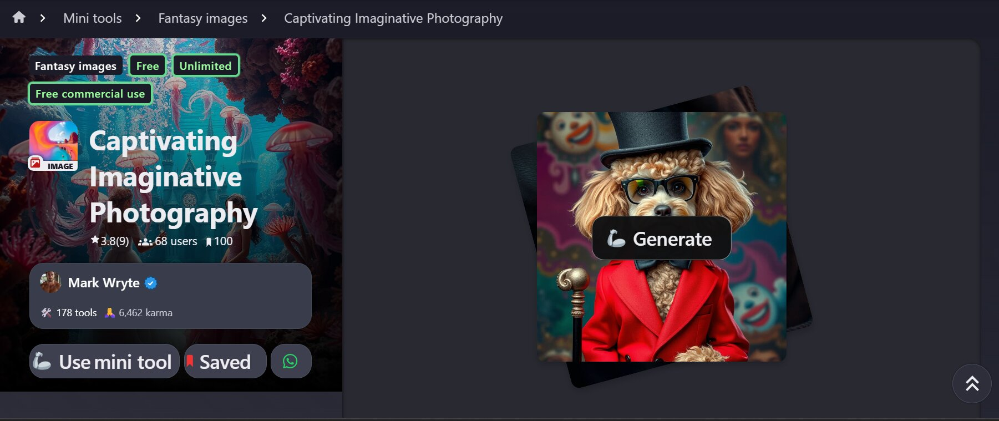
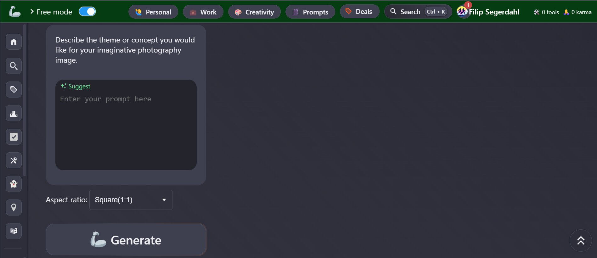

Skapare & bakgrund
Vem står bakom Captivating Imaginative Photography?
Mark Wryte
“Mark Wryte är skaparen av verktyget, han gick med på plattformen i januari 2024 och han har gjort 177 andra verktyg på plattformen i en mängd olika områden.”
Han har skapat allt från AI start up idea generators till workflow generators, vilket visar att han arbetar brett med generativa AI-lösningar.
Nebius – sponsorn
Captivating Imaginative Photography är sponsrat av Nebius-run Open-Source LLMs in production, ett företag grundat i Amsterdam.
De säljer en mängd olika AI-tjänster och är listade på Nasdaq, vilket ger verktyget en tydlig koppling till den professionella AI-marknaden.
Syfte & nytta
Vad är poängen med verktyget?
Huvudsyfte
“Det positiva med Mark Wrytes verktyg är att det inte kostar någonting att använda. Men huvudsyftet är ganska simpelt och det är att kunna skapa nya bilder från en enkel text prompt.”
Verktyget fungerar alltså som en låg tröskel in i AI-bildgenerering – ingen kostnad, bara skriv en prompt och generera.
Nytta i praktiken
- Snabbt: Genererar bilder på kort tid.
- Gratis: Inga tokenkostnader eller betalväggar.
- Enkelt: Minimal inlärningskurva – skriv, klicka, klart.
- Kreativt: Bra för idéer, koncept och experiment.
Målgrupp
Vem är verktyget egentligen till för?
Bred målgrupp
“Målgruppen är väldigt bred. Man kan inte riktigt definiera den, ai:n är till för dem som vill generera bilder och skapa kreativa verk.”
Det kan vara elever, kreatörer, hobbyfotografer, designers eller vem som helst som vill testa AI-genererade bilder utan kostnad.
Exempel på användare
- Studenter: För skolprojekt och presentationer.
- Innehållsskapare: Snabba visuals till sociala medier.
- Lärare: Illustrera material och uppgifter.
- Nyfikna: Testa AI utan att behöva betala.
Hur verktyget används
Från prompt till bild – steg för steg.
Flödet
“Detta verktyg används som en vanlig bildgenerator. Det finns en liten ruta där prompten skrivs in och efter en stund får man ut bilden.”
- Skriv en prompt i textfältet.
- Skicka prompten och vänta några sekunder.
- Ladda ner eller spara den genererade bilden.
Exempelprompt (Golden Retriever)
Du använde Gemini för att generera en avancerad prompt, till exempel:
“Hyper-realistic, close-up portrait of an adult Golden Retriever looking directly into the camera lens with intense, soulful, amber eyes. The dog has a calm and curious expression. The focus is critically sharp on the eyes and the wet, textured black nose. Every individual strand of golden fur around the face is visible, including delicate whiskers and slight moisture around the muzzle. The photograph is taken in natural daylight (golden hour), creating a warm soft glow on the fur and capturing a tiny, detailed reflection of the outdoors in the dog's pupils. Extremely shallow depth of field (bokeh), rendering the background (a rustic park) into smooth, unidentifiable green and brown blur. Shot on a Sony A1 with a 85mm f/1.4 lens. Aperture f/1.8, Shutter Speed 1/1600s, ISO 400. Natural film grain, 8k resolution, photorealistic masterpiece, national geographic style, highly detailed textures, studio quality lighting.”
Denna prompt testades sedan i ChatGPT, Gemini och Captivating Imaginative Photography för att jämföra resultat.
Begränsningar
Vad är svagheterna med verktyget?
Bildkvalitet & feedback
“Kvalitén på bilderna skulle jag säga är den största begränsningen. Man kan inte heller ge feedback direkt till ai:n som i en vanlig chatt bot, man måste ändra i prompten och göra om bilden på nytt om man vill ändra på något som man inte tycker om.”
Det gör verktyget mindre interaktivt än moderna chattbaserade AI-modeller där man kan iterera direkt i dialogen.
Begränsningar i antal bilder
“Men det finns inga begränsningar på hur många bilder man kan generera.”
Det innebär att du kan experimentera hur mycket du vill, så länge du accepterar den något lägre bildkvaliteten.
Jämförelse med ChatGPT & Gemini
Samma prompt – olika resultat.
Captivating Imaginative Photography
“Det känns som att Captivating Imaginative Photography ligger några år bakåt i tiden när det kommer till bildkvalitén.”
Bilden blir användbar, men saknar den skärpa, detaljrikedom och moderna look som de andra två levererar.
ChatGPT
Du upplevde att ChatGPT genererade en bild med högre kvalitet, bättre fokus och mer realistiska detaljer.
Särskilt ögon, pälsstruktur och ljussättning blev mer övertygande.
Gemini
Gemini levererade också en bild med tydligt högre kvalitet än Captivating Imaginative Photography.
“Om man jämför Captivating Imaginative Photography med mer populära Artificiella intelligenser ser vi en betydligt högre kvalité och bättre fokus på bilderna.”
Sammanfattning
Helhetsbild av verktyget.
“Verktyget är gratis och sponsrat av Nebius, ett amsterdamskt AI företag noterat på Nasdaq. Syftet är att generera bilder utifrån textpromptar och målgruppen är bred. I princip vem som helst som vill skapa AI genererade bilder.”
Vid testning med samma detaljerade prompt som i ChatGPT och Gemini blir det tydligt att Captivating Imaginative Photography tappar i bildkvalitet. De främsta begränsningarna är just bildkvaliteten samt att man inte kan ge direkt feedback till verktyget utan måste skriva om prompten och generera om från grunden.
Bildgalleri
Koppling mellan text och dina genererade bilder.
Bild från Captivating Imaginative Photography

Bild från ChatGPT
Bild från Gemini
Bilder från hemsidan

Extra bild 2

Extra bild 3
